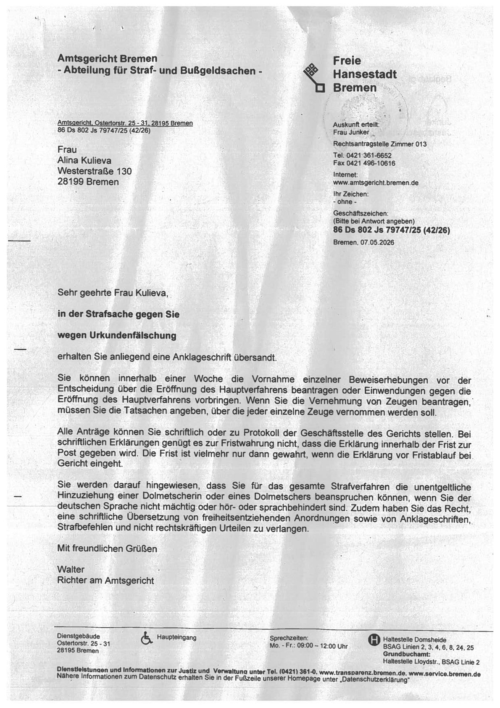
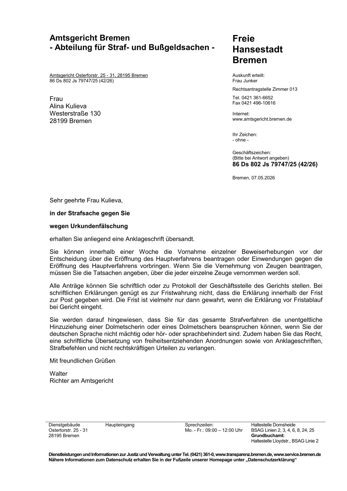

❌ Файл original-scan.jpg не найденOriginal-Scan (JPG)
Vom uneditierbaren Scan zum perfekt rekonstruierten, professionellen Word-Dokument – in höchster Qualität.
Links: das Originaldokument (PDF oder Scan) – oft unstrukturiert, fehlerbehaftet und schwer zu bearbeiten. Rechts: das Ergebnis unserer präzisen Layout- und Inhaltsrekonstruktion (dargestellt als Screenshot).
Was Sie erhalten:
Das Ergebnis: Ein hochwertiges, sofort einsetzbares Dokument, das sich anfühlt, als wäre es von Anfang an digital und professionell erstellt worden.
Sparen Sie wertvolle Zeit, vermeiden Sie teure Nachbearbeitung und steigern Sie die Qualität Ihrer Übersetzungs- und Dokumentenprozesse auf ein neues Niveau.

❌ Файл original-scan.jpg не найден
❌ Файл verarbeitetes-dokument.jpg не найден.